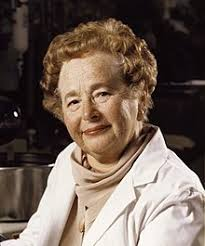

Biography
Gertrude Belle Elion was born in 1918 in New York, New York. She was a stand out student in highschool, but first found her passion for medicine when her grandfather died from cancer. She went off to college at Hunter College and majored in chemistry. At the time, it was difficult for women to have a career in chemistry, which was typically a man’s job. In the meantime, she went back to school, attending New York University where she earned her master’s degree. After she graduated, she was unable to find a job until World War II. Because the men were fighting in the war, chemist jobs opened up, and she began to work in a laboratory.
Using a new form of biochemistry with her long-time partner and friend, George Hitchings, Gertrude and George made many groundbreaking drugs. One drug that they made, Prinethol, was the first treatment for leukemia. Another drug they made was the first drug to treat AIDS. They made other drugs that treated herpes, malaria, gout, and another helped with organ skin transplants.
Gertrude B. Elion was a woman of great knowledge, dedication, and perseverance. Being a woman chemist in the mid 20th century did not stop her from expanding her knowledge or changing the medicinal world. Gertrude B. Elion truly changed medicine throughout her life.